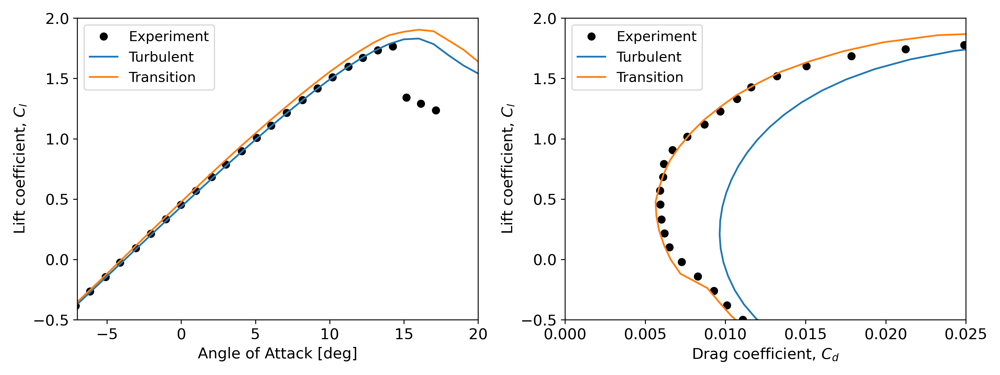
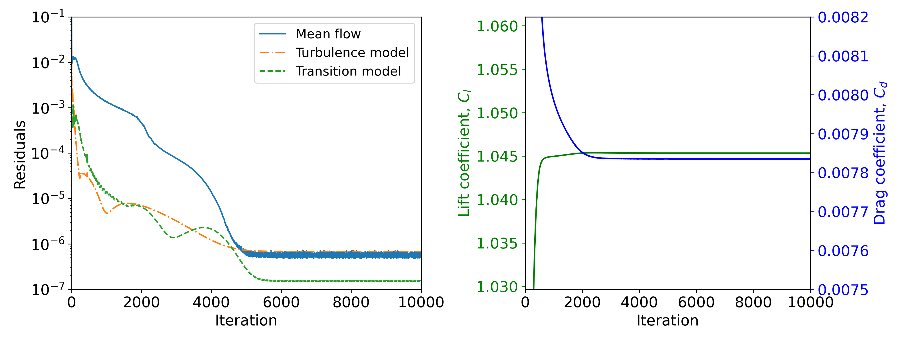

NASA NLF(1)-0416
Validation and verification of the transition model were conducted for the NASA NLF(1)-0416 airfoil using Nalu-Wind with the 1-equation gamma transition model. First, a grid sensitivity study was performed using six different mesh resolutions from the AIAA CFD Transition Modeling DG[1]. The results were compared to those from NASA’s structured flow solver, OVERFLOW[2], and unstructured flow solver, FUN3D[3], using the same turbulence and transition models, CFD meshes, and inflow conditions. Based on these results, a full angle-of-attack sweep was performed, with results compared to experimental data.
Simulation Conditions
Test airfoil: NASA NLF(1)-0416 airfoil with a thickness of 16%
Flow Condition: M=0.1, Re=4million, Tu=0.15%
\(U_\infty\)=34.1m/s, \(\rho\)=1.225kg/m3, \(\mu_t/\mu\)=1
\(k_\infty\)=0.00392448375, \(\omega_\infty\)=460.35
CFD meshes with six different resolutions provided by AIAA CFD Transition Modeling DG [1]
2-D structured C-type meshes: Tiny, Coarse, Medium, Fine, Extra, Ultra resolutions as defined in [4]
Turbulence / Transition model: SST-2003 with the 1-eq Gamma transition model
Nalu-Wind version: f3cecafbdc05e61d0550ff41a30307425ef8197b
Running the simulation
Download the benchmarks repository
$ git clone --recursive git@github.com:Exawind/exawind-benchmarks.git BENCHMARKDIR
Here
BENCHMARKDIRis the location where you’d like the benchmark repository to be cloned and cases to be run. After cloning, download the meshes using DVC.Run the AOA=0 case
$ cd BENCHMARKDIR/nalu-wind/2D_airfoil_Transition/NLF1-0416/aoa_0/input_files/ # Load any modules/libraries necessary for ExaWind/Nalu-Wind $ mpirun -np NCPU naluX -i nlf0416_F_aoa_0.0.yaml
Here
NCPUis the number of ranks to use in the simulation. Note the exactmpiruncommand to launch the case may differ between platforms, and might require a submission script to run on various clusters.Run the AOA=5 case
$ cd BENCHMARKDIR/nalu-wind/2D_airfoil_Transition/NLF1-0416/aoa_5/input_files/ # Load any modules/libraries necessary for ExaWind/Nalu-Wind $ mpirun -np NCPU naluX -i nlf0416_F_aoa_5.0.yaml
Results: Grid Sensitivity Study
Lift and drag coefficients at AoA=5°

Two different options for the freestream conditions are tested here:
Local turbulence intensity with the sustaining terms (green line): same way as the OVERFLOW and FUN3D simulations
Constant turbulence intensity without the sustaining terms (red line)
The grid sensitivitiy results are presented for the lift and drag coefficient. In the above figure, the x axis, h, is defined as \(h=1/\sqrt{N}\) where \(N\) is total number of nodes, meaning smaller values correspond to finer grids. With the Option 1, Nalu-Wind results show similar trends to the FUN3D results. It is also seen that to achieve the grid-converged trends, at least the third finest mesh resolution, (“Fine”) is required. Overall, both Nalu-Wind and FUN3D show more mesh-dependence than OVERFLOW. This is attributed to the numerical shcemes of the unstructred flow solvers, which have lower order of accuracy in space compared to structured flow solvers.
There are two ways for the Option 1: specifying k and \(\omega\) accounting for the decay from the far-field to the leading edge or using the sustaning terms. In the current work, due to a very large size of the outer boundary from the far-field to the wall (1,000 chord lengths), the sustaning terms are applied, which is the same way as the OVERFLOW and FUN3D simulations. In a Nalu-Wind input, the sustaning terms, sdr_amb and tke_amb, can be specified as below
- turbulence_model_constants:
- fsti: 0
- sdr_amb: 460.34999999999997
- tke_amb: 0.00392448375
If the freestream k and \(\omega\) account for the decay, the sustaining terms should be zero.
Option 2, which applies a constant turbulence intensity, improves grid convergence of the lift and drag, particularly at low mesh resolutions. For more consistent and accurate predictions, Option 2 is recommended, which can be speficied in a Nalu-Wind input as follows:
- turbulence_model_constants:
- fsti: 0.15
- sdr_amb: 0.0
- tke_amb: 0.0
Option 2 is activated only if fsti is explicitly specified in the Nalu-Wind input with a positive value. However, it should be noted that Option 2 is valid only for external flows without any downwash (i.e. single airfoil or single turbine). For internal flow or multi-turbine cases, Option 1 should be used.
Results: Angle of Attack Sweep
Comparison of the lift and drag coefficient

Based on the grid sensitivity results, a full sweep of angles of attack was performed using the Fine mesh level. The two figures above compare the lift and drag polar with the experimental measurements[5]. For the lift, the transition simulation slightly over-predicts the lift coefficient in the linear range of the lift curve, a similar behavior also observed in transition predictions using other transition models and other flow solvers. For the drag polar, the transition simulation predicts lower drag across the range of angles of attack than the fully turbulent simulation and better compares with the experimental data. Specifically, the errors in the predicted drag coefficient at AoA=5° are 2.87% for the transition simulation and 57.56% for the fully turbulent simualtion.
Results: Convergence
Time history of the residuals and aerodynamic coefficients

Convergence behaviors of the transition simulation are presented in the above figure at AoA=5°. Left figure shows the time history of the non-linear residuals from Nalu-Wind for the mean flow (momentum), turbulence model (\(k\)), and transition model (\(\gamma\)) at the last Picard iteration of each main iteration. In the figure, all residuals decline smoothly by 3.5 to 4 orders of magnitude until they finally stall. Similary, both the lift and drag converge well without oscillations, with less than 0.1% difference from the converged value around iteration 4,000.
Each case with the “Fine” mesh took approximately 40 minutes to 10,000 iterations, using 4 Picard iterations per time step, on 26 cores of NREL’s Kestrel HPC cluster. The number of cores per case was not determined by Nalu-Wind’s scalability on Kestrel, but simply to accommodate 4 cases on a single node of Kestrel.
References
[1] https://transitionmodeling.larc.nasa.gov/
[2] Venkatachari, B. S., et al., “Implementation and Assessment of Menter’s Galilean-Invariant \(\gamma\) Transition Model in OVERFLOW,” AIAA AVIATION 2023 Forum, 2023. https://doi.org/10.2514/6.2023-3533
[3] Hildebrand, N., et al., “Implementation and Verification of the SST-\(\gamma\) and SA-AFT Transition Models in FUN3D,” AIAA AVIATION 2023 Forum, 2023. https://doi.org/10.2514/6.2023-3530.
[4] Coder, J., “Standard Test Cases for Transition Model Verification and Validationin Computational Fluid Dynamics,” 56th AIAA Aerospace Sciences Meeting, January, 2018. https://doi.org/https://doi.org/10.2514/6.2018-0029.
[5] Somers, D. M., “Design and Experimental Results for a Natural-Laminar-Flow Airfoil for General Aviation Applications,” NASA Technical Paper 1861, 1981.